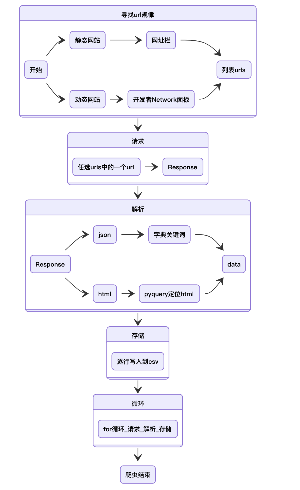
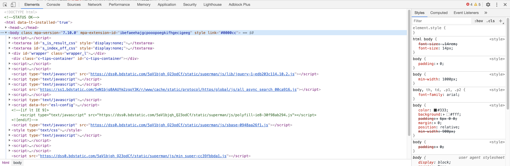
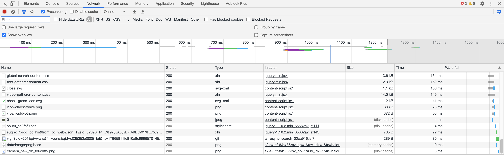

爬虫的适用条件
- 有权限(银行后台这种铁定不行)
- 在浏览器能看到(瞎想为空，眼见为实)
- 相比手动复制，设计爬虫更划算。
互联网示意图

获取网页数据：
- 红色线条：
发起请求 （request） - 蓝色线条：
返回响应（response）
网址URL本质是文件存放路径
-
个人浏览器主页 https://hiresearch.github.io/，
-
https://github.com/hiresearch/hiresearch.github.io
-
博客 https://hidadeng.github.io/
-
https://github.com/hiresearch/hiresearch.github.io
爬虫流程

爬虫流程解析
| 爬虫设计阶段 | 类型 | 问题 | 需要做到 |
|---|---|---|---|
| 1 | 请求 | 网页数据在哪里？ | 发现网址url、link规律 |
| 2 | 请求 | 如何获取网页数据？ | 先尝试使用requests成功访问一个url、link，拿到一个页面数据 |
| 3 | 解析 | 从html中定位需要的数据 | 使用pyquery对这一个页面的网页数据进行解析 |
| 3 | 解析 | 从json中定位需要的数据 | 使用json 或 resp.json() 进行json网页数据解析 |
| 4 | 存储 | 如何存储数据 | 使用csv库将数据存储到csv文件中 |
| 5 | 整合 | 重复2-4 | for循环对所有的url、link进行访问-解析-存储 |
开发者工具
Chrome、Firefox
按F12键（mac电脑是option+command+I） 打开开发者工具。
数据采集常用的有 Element面板 和 Network面板
Element面板：查看网页元素（html网页数据）Network面板：查看浏览器与网站之间的数据交互信息，多用于抓包 Fiddler、Charles

